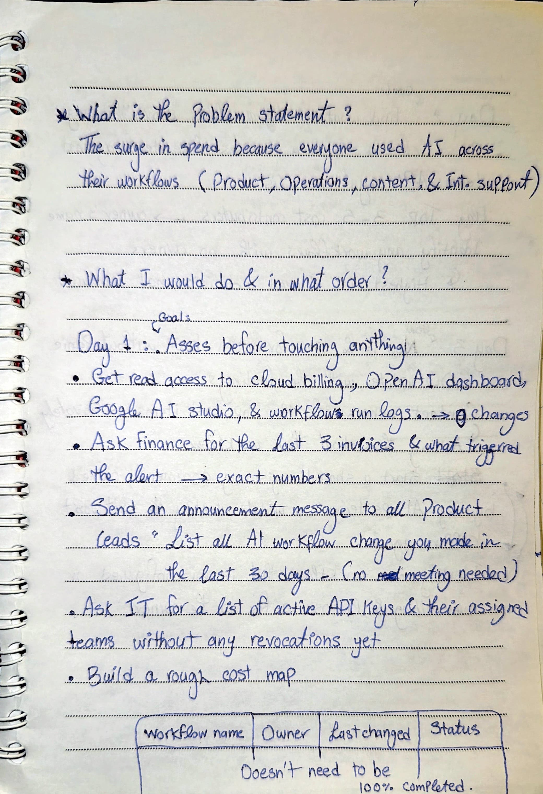
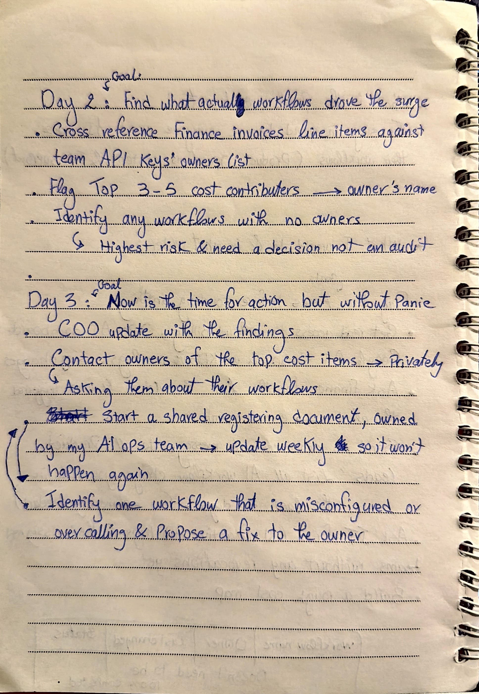
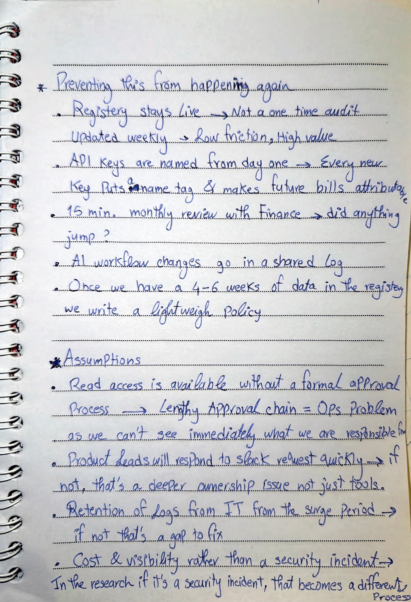
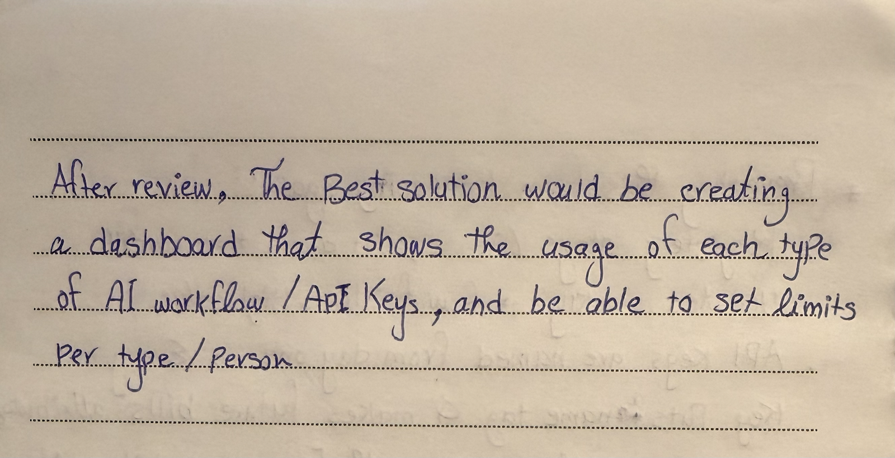

STORM IDEAS — AI OPERATIONS TASK
Handwritten Working Notes
Hover any section to read — tap on mobile
Original PDF

THE REAL DIAGNOSIS
What the notes don't say
The notes show what I would do. They don't show the diagnosis that comes before the actions.
This is not a spend problem. It is a visibility problem.
The surge in spend is a symptom. The root cause is that AI tooling scaled faster than operational awareness. Nobody knows what is running, who owns it, what changed, or what it costs. The spend surge was inevitable given this setup and it will happen again without a fix. That reframe changes what you do first. You don't start by cutting spend. You start by getting visibility.
DELIBERATE RESTRAINT
Things I decided not to do
- Write a policy document Finance asked for this. It is the wrong first move. A policy written before you understand what you are governing will not fit reality. I would tell Finance: within two weeks, not today.
- Revoke API keys Disruptive without clear evidence of misuse. Could break workflows the product depends on.
- Set spending caps immediately Without knowing what spend is legitimate, caps could cut important work. Understand first, then constrain.
- Build tooling or dashboards Not the moment. Visibility needs come before infrastructure.
- Create a steering committee Heavy governance is exactly what the COO said to avoid. It adds delay, not clarity.
- Ask people to submit usage forms Creates friction and resentment. People work around processes they find annoying.
FIRST UPDATE WHILE STILL UNRESOLVED
The message I would send on Day 3
I drafted the structure myself then used AI to help tighten the wording. The first version was too long. I cut anything that sounded like I was managing the situation instead of reporting it honestly.
To: [COO Name]
Subject: AI Spend Surge — Where We Are (Day 3 update)
Hi [Name],
Here is where things stand. I have mapped the main cost signals across Finance invoices, cloud billing, and provider dashboards. I can now see approximately [X] active AI workflows across the business, though ownership is still incomplete on a few.
The top cost contributors appear to be [content automation / reporting scripts / support prompts]. I am in direct conversation with the relevant owners now. My current read is that the surge was driven by a volume increase in an existing workflow or a new workflow that was not logged centrally. I will have that confirmed by end of week.
What is not a crisis: most of what is running is legitimate work. The issue is that it scaled without anyone tracking it centrally. That is the thing I am fixing.
What I am doing next: fixing the most obvious inefficiency, assigning ownership to every live workflow, and building a simple register so this does not happen without warning again.
On the policy question from Finance, I want to hold that for two weeks. A policy written before we understand what we are governing will not fit what we actually have.
Will send a full update by [date].
Mohammed
AI USE — HONEST ACCOUNT
Where AI helped and where it did not
BEFORE AI
I worked the full problem out on paper before opening any tool. The problem statement, the 3-day sequence, the cost map structure, the assumptions, and the prevention steps were all written by hand in my notebook. The notebook pages above are the evidence. The thinking came first.
WHERE AI CAME IN
I used Claude to turn my handwritten structure into a polished document and to build the HTML submission. I directed the content, reviewed every section, and pushed back on anything that did not match what I meant.
I used AI to draft the COO update. The first version was too long and too careful. I rewrote it to be shorter and more direct.
I used AI to pressure-test the sequence. I asked it to challenge whether I was solving the right problem. It held up.
I rejected the first framing AI gave me. It led with writing a policy document, which is exactly what I argue against in this submission. I pushed back and started again.
The judgment calls are mine. AI helped me build faster and check my thinking. It did not do the thinking.
PROMPT EXAMPLE
How I talked to AI during this task
This is close to the actual prompt I used when I asked Claude to challenge my approach. I write prompts like I am talking to a smart colleague, not like I am programming a machine.
"I have been given a task by a company called Storm Ideas. They had an unexpected AI spend surge and the COO asked me to figure out what is going on without turning it into a heavy governance exercise.
I have already worked out my approach on paper. Here is my plan:
Day 1: Get read access to billing and dashboards, ask Finance for the last 3 invoices, send an async message to Product leads asking them to list every AI workflow change in the last 30 days, ask IT for active API keys, start a rough cost map.
Day 2: Cross-reference invoice line items with API key owners, find the top 3 to 5 cost contributors, identify any workflows with no owner.
Day 3: Send the COO a short update, contact workflow owners privately, start a shared register, fix one misconfigured workflow.
I also plan to delay the policy document Finance asked for because I think writing it before understanding what exists is the wrong order.
Can you challenge this? Tell me if I am solving the wrong problem, if my sequence is off, or if there is something important I am missing. Be direct. Do not just agree with me."
FINAL REVIEW
Why this is the future-facing solution
I re-reviewed the full task, the handwritten notes, the AI-assisted draft, and the final structure. My conclusion did not change: the durable answer is not heavier governance, more forms, or an immediate policy document. The future-facing solution is lightweight operational visibility.
AI workflows are going to keep spreading across teams. The right operating model is one where teams can still move quickly, but ownership, cost, provider, status, and recent changes are visible by default. In practice, that means a simple dashboard or register that shows usage by workflow, API key, team, and owner, with sensible limits once the data is understood. That is what makes AI adoption scalable instead of chaotic.
This final review helped me land on the simplest version of the answer: do not slow the business down. Make the invisible visible, then use that visibility to make better decisions.
